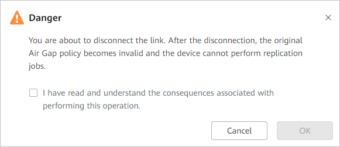

This section describes how to disconnect the replication link of a storage device. This operation will forcibly disconnect the replication link, causing the original Air Gap policy to be invalid. In this case, replication jobs cannot be performed on the device.
The storage device has been associated with an Air Gap policy.
